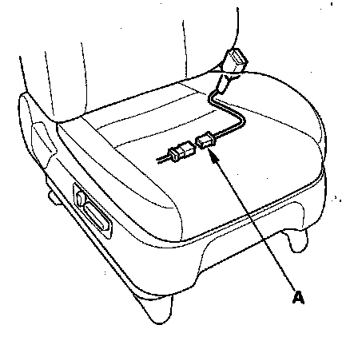

DTC 62-2x
DTC 62-2x ("x" can be 0 thru 9 or A thru F): Short in Front Passenger's Seat Belt Buckle SwitchNOTE: Before doing this troubleshooting procedure, review SRS Precautions and Procedures.
1. Erase the DTC memory.
2. Turn the ignition switch ON (II), then buckle and unbuckle the front passenger's seat belt several times.
3. Read the DTC.
Is DTC 62-2x indicated?
YES - Go to step 4.
NO - Intermittent failure, the system is OK at this time. Go to Troubleshooting Intermittent Failures. If another DTC is indicated, go to the DTC Troubleshooting Index.
4. Turn the ignition switch OFF.

5. Disconnect the front passenger's seat wire harness 3P connector from the front passenger's seat belt buckle switch 3P connector (A).
6. Turn the ignition switch ON (II).
7. From the system selection menu on the HDS, select SRS, then select SRS again, then select PARAMETER INFORMATION, then Buckle Switch, Seat Position Sensor, and check the status on the HDS screen for FRONT RIGHT SEAT BELT BUCKLE SWITCH.
Is OPEN indicated on the HDS?
YES - Replace the front passenger's seat belt buckle assembly, then clear the DTC.
NO - Short to ground in the front passenger's seat wire harness or floor wire harness; replace the faulty harness.